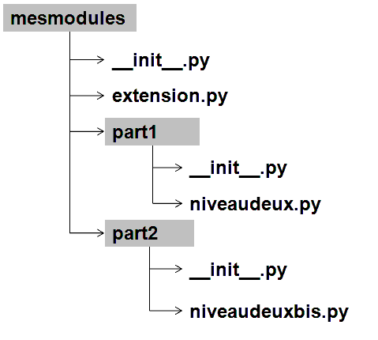

Modularité⚓︎
Rappels⚓︎
Utilisation d'un module⚓︎
Vous avez déjà utilisé les modules mathet randompar exemple. Nous rappelons que l'on peut appeler un module ainsi :
1 2 3 4 | |
Utilisation du module
1 2 3 4 | |
On peut aussi utiliser un alias :
1 2 3 4 | |
Ou encore sans avoir à écrire de préfixe :
1 2 3 4 | |
Attention
Cette dernière méthode est priviligiée car elle permet d'importer uniqument les fonctions nécessaires et donc de gagner en temps d'éxecution si on utilise un module important. En remplaçant la liste des fonctions par * on importe tout le module.
Aide d'un module
On peut invoquer l'aide sur un module c'est-à-dire sa description, la liste de ses fonctions et l'aide sur chacune des fonctions. Il faut que le module soit importé :
1 2 | |
Assertions⚓︎
Pour tester les fonctions, on peut ajouter des tests en cours de code, sans que celui-ci ne soit pris en compte Ce sont des lignes que l'on peut supprimer sans changer la structure du code.
Elles permettent de tester les conditions critiques et permettent de stopper le programme si l'une d'elle se produit (ce qui ne doit pas arriver si le programme est correctement implémenté).
1 2 3 | |
1 2 | |
1 2 | |
Bloc try ... except...⚓︎
On peut anticiper les problèmes que posent l'utilisation des modules comme par exemple un argument de fonction qui ne serait pas du bon type de donnée.
Pour cela on utilise des tests qui permettent de revenir au début de la fonction tout en signanlant à l'utilisateur l'ereur commise.
Par exemple :
1 2 3 4 5 | |
1 2 3 4 5 6 | |
Quelques exemples d'erreurs détectables
NameError : accès à une variable inexistante
IndexError : accès à un indice non valide
KeyError: accès à une clé de dictionnaire non valide
ZeroDivisionError : division par zéro
TypeError : opération appliqué à des valeurs incompatibles
un exemple complet
1 2 3 4 5 6 7 8 9 | |
Créer son propore module⚓︎
Strucutre de base d'un module⚓︎
Important

Pour obtenir cette structure on réera un dossier mesmodules contenant les diférents fichiers .py du module. On créera un fichier vide __init__.py dans ce dossier et on appelera les différentes parties du module dans le fichier comme ci-dessous :.
Appel des modules :
1 2 3 4 | |
Un module est un dossier comprenant une ou plusieurs bibliothèques (ou library) qui sont en fait des fichiers .py. Par exemple le module matplotlib contient entre autre, le fichier pylab.pyet pyplot.py.
La Documentation du module⚓︎
Il faudra documenter le module de façon explicite. Chaque fonction devra comporter des docstrings qui expliquent clairement le type d'arguments attendus et le type de données retournées.
Les noms de fonctions et des variables doivent être explicites pour la meilleure compréhension de tous.
Vous pouvez créer une documentation à part (de préférence en anglais) pour détailler encore plus les recommandations.
Voici un exemple de module créé sur les suites de fibonacci (voir reproduction des lapins au chapitre Récursivité).
Pour afficher cette description, on utilisera la fonction help().
1 2 3 4 5 6 7 8 9 10 11 12 13 14 15 16 17 18 19 20 21 22 23 24 25 26 27 28 29 30 31 32 33 34 35 36 37 38 39 40 41 42 43 44 45 | |
Les fonctions⚓︎
Les fonctions doivent contenir des tests de façon à ce que lorsqu'une erreur est détectée, elle fasse afficher un message d'erreur compréhensible par l'utilisateur.
Elles doivent être documentées précisement.
Fonctions privées
On peut avoir besoin dans le module de créer des fonctions privées, c'est-à-dire qu'elle ne sera pas forcément accessible de l'extérieur mais ne sera utilisée que à l'intérieur du module :
1 2 3 4 5 | |
Finir le fichier⚓︎
Lors de l'exécution d'un programme, python crée une variable appelée __name__. Lorsque le fichier principal est exécuté, cette variable pour ce fichier prend la valeur "__main__". Le code ci-dessous permet de détecter si le fichier dans lequel il apparait est le programme exécuté directement ou un programme appelé par le prorgramme principal.
Tout ce qui se trouve dans la boucle ne sera exécuté que si CE programme est exécuté et pas s'il est appelé par un autre
1 2 | |
Projet⚓︎
Un petit tour par ici pour voir le travail à faire.
Création MB. (ré)utilisation et modification libre mais non commerciale CC-BY-NC